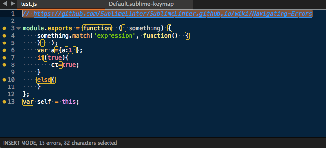

Клонируем стиль написания JS-кода
Но для начала поговорим о важности единого стиля написания кода
Если у вас единый стиль на всю команду, то...
- вы будете хорошо ориентроваться в чужом коде
- не будет споров при code review о стилях
- будет проще ввести нового разработчкика в проект
- будет проще делать review
- не нужно будет подстраиваться под каждого отдельного коллегу
В JS эта проблема даже более актуальна, чем во многих других языках (Java/C#/Python etc.)
Вот три варианта объявления переменных:
var foo = 1;
var bar = 2;
var foo = 1,
bar = 2,
baz = 3;
var foo = 1
,bar = 2
,baz = 3;
Нам нужно добавить проверку стиля по аналогии с JSLint
(им, я надеюсь, вы уже пользуетесь)
Для этого мы будем использовать JSCS
Он позволяет...
- Настроить свой собственный стиль
- Использовать пресеты уже существующих стилей (Google, Yandex, Airbnb)
Вы так же можете использовать плагины для текстовых редакторов

И pre commit hook
Осталась одна проблема
У всех разные редакторы/ide, в которых разные настройки
Задавайте вопросы, пожалуйста
EditorConfig позволит вам...
- Создать единый конфиг текстовых редакторов/ide
- Хранить его вместе с проектом в VCS
- Легко переносить из проекта в проект
Простенький пример конфига
# EditorConfig is awesome: http://EditorConfig.org
# top-most EditorConfig file
root = true
# Unix-style newlines with a newline ending every file
[*]
end_of_line = lf
insert_final_newline = true
# Matches multiple files with brace expansion notation
# Set default charset
[*.{js,py}]
charset = utf-8
# 4 space indentation
[*.py]
indent_style = space
indent_size = 4
# Tab indentation (no size specified)
[Makefile]
indent_style = tab
# Indentation override for all JS under lib directory
[lib/**.js]
indent_style = space
indent_size = 2
# Matches the exact files either package.json or .travis.yml
[{package.json,.travis.yml}]
indent_style = space
indent_size = 2
Данный плагин есть для многих редакторов/ide
А многими другими он поддерживается по умолчанию
Пишите код единообразно и...
ваши волосы станут мягкими и шелковистыми